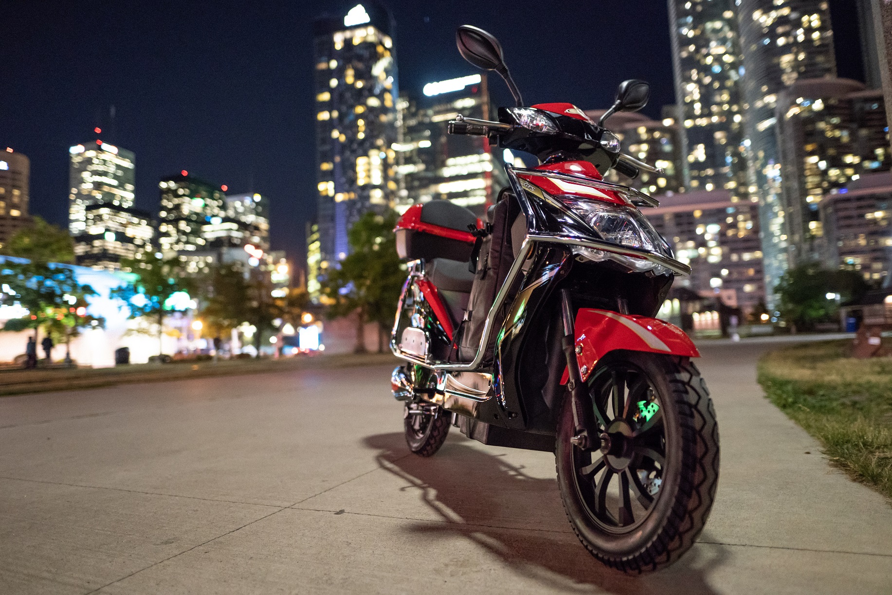

A hobby that I like to do in my free time is cinematography, I like to do it because it’s interesting and fun. I make little cinematic sequences and montages. I’ve shot a couple music videos and a few short films as well. It’s something to do when I am bored or it’s just a good time for it. Sometimes I challenge myself to shoot a sequence in one room that’s about a minute long, this helps me improve and see things I never would've especially if I am shooting in multiple locations. I also edit my videos in Adobe’s software, Premiere Pro, which is one of the top editing software out today.
Another one of my hobbies is doing automotive work, this is something I like to do because it’s more hands on. I can design different vehicles such as go-karts and mini-bikes and put it in real life. I also help with the cars in my family, for instance, oil changes, brake jobs, tire swaps, etc. I am also enrolled in my school automotive class where we work on many customer cars and where I am going to be building a race car. This will always be a fun hobby for me because I find it very interesting and relevant in today’s world, but the future is another question.
Vehicles such as my e-bike are fun to ride on a daily basis, if it’s by myself or with my dad. I also take my dog to parks nearby for his daily walk. It’s a good way to transport especially if you do not have a driver's license because as long you are 16 and above you can ride this on public roads. As it’s fully electric, it is considered a green vehicle which helps the earth as well.
